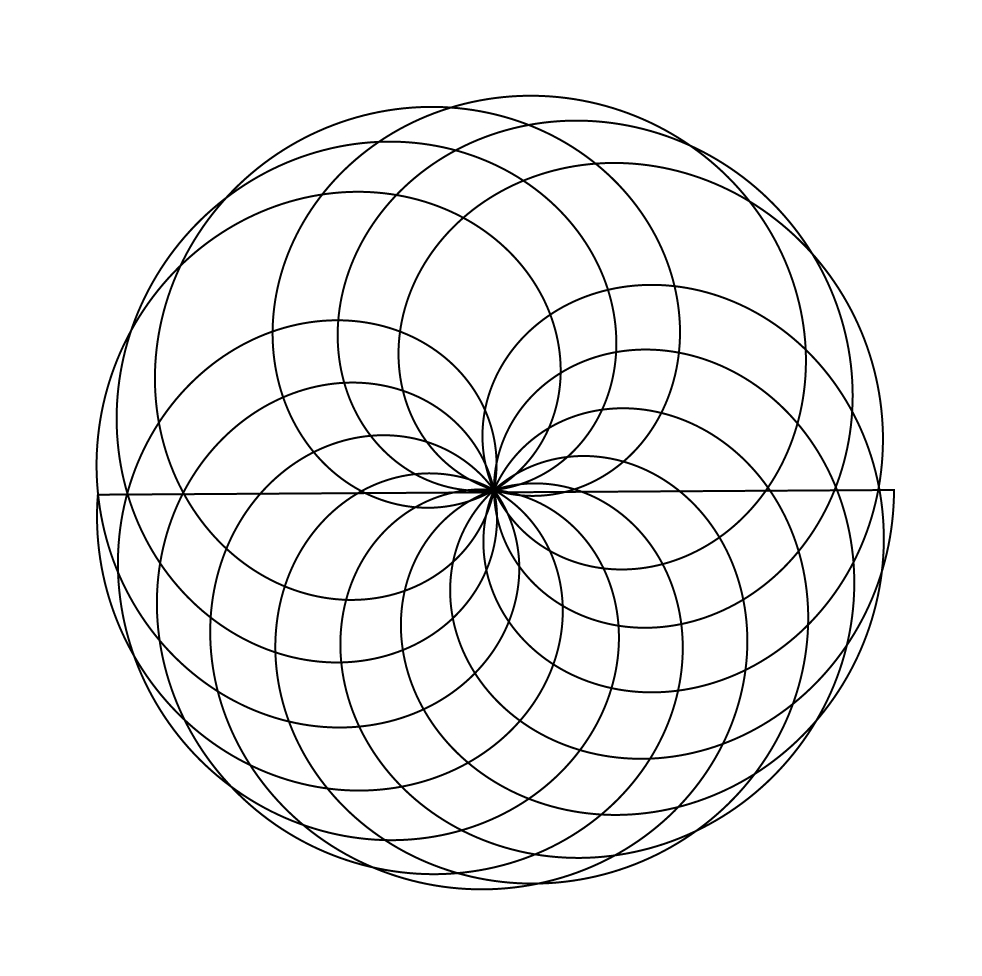
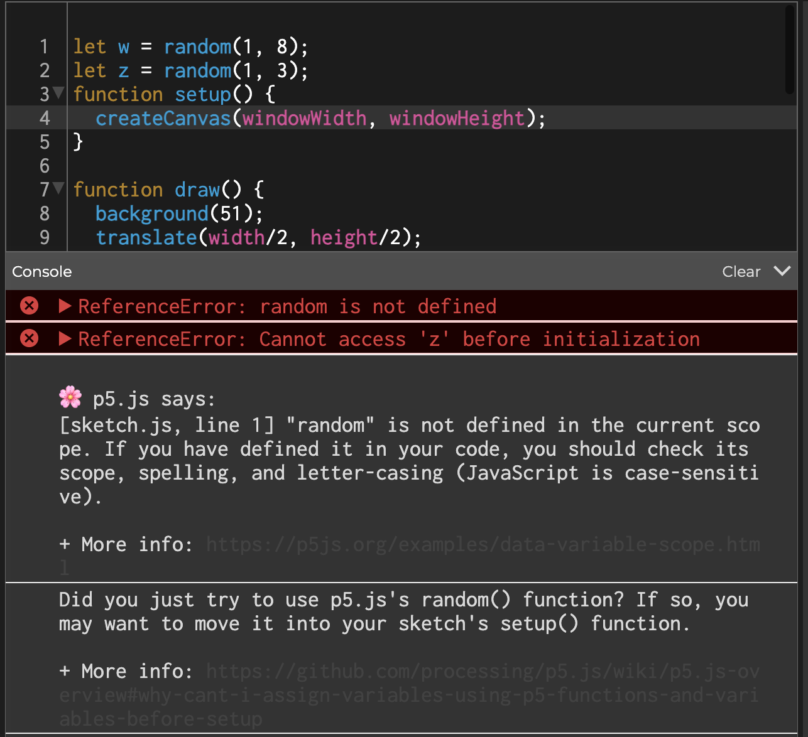

MP2 Writeup
Overview and Usage
This project explores how p5.js can be used to create interactive
graphical elements. I drew inspiration from the rhodonea curve (rose).
Development Process
- First, I explored what kinds of mathematical formulas could be used
to draw shapes inside the p5.js website editor. That lead me to a
CodingTrain video describing the formula for a rhodonea curve, which
helped me develop my first sketch.
-
I then formatted the rose to be more aesthetically pleasing to me.
Sketches 2–3 were easy to iterate on by simply looking at the
documentation available on the p5.js website. See below for an early
black and white color scheme.

-
Sketches 4–5 required me to look at more CodingTrain videos
regarding how sound was generated using p5.js, but I was quickly
able to iterate on my designs to meet the assignment brief.
-
I then created individual html pages to host each of the sketches
and added them to my website repository.
-
I concluded the project by creating the gallery using a flex-box.
Issue Deep-Dive
I fortunately did not experience any significant problems, or at least, not any
problems that quick google searches did not help address. Early on, however, I
was repeatedly having issues regarding how variables were being declared–
specifically, problems with scope. See the sample error below message (1 of many).

Hannah helped me address this issue by first establishing a variable using the
keyword “let” and then defining it later, when/where it would be used. After
receiving this help, I did not encounter this issue again.
Future Work
If I were to continue working on this project, I would try to see how I could
create multiple roses within a single canvas, or perhaps play with how they
interact with one another. It would also be fun to simply play around with p5.js
and try something completely new.
Kudos
I relied heavily on the resources provided by the CodingTrain, so I must give them the most kudos.
I would also like to thank my instructor, Hannah, for help with debugging and general information
regarding p5.js. Additionally, I would like to give kudos to Tim Chen, who explained to me how to
access the html/css files associated with a p5.js sketch inside the online editor.
View Gallery of Drawings
Return to Home Page